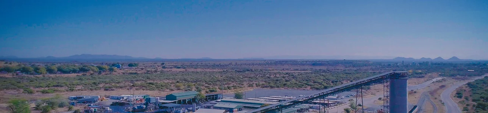
Siyanda Bakgatla Platinum Mine (SBPM)
Siyanda Resources purchased a majority stake in Union Mine from Anglo American Platinum in February 2018.

Our operations prioritise efficiency, safety, and sustainability in every phase of the mining process.
At Siyanda Resources, our operations are at the core of our commitment to responsible and efficient mining. We focus on maximizing resource extraction while minimizing environmental impact, ensuring the safety of our workforce, and contributing positively to the surrounding communities.
Through state-of-the-art technology and best practices, Siyanda Resources consistently delivers high-quality outputs, driving sustainable growth and long-term value for all our stakeholders.

Siyanda Resources purchased a majority stake in Union Mine from Anglo American Platinum in February 2018.
Siyanda Resources are arguably the leaders in UG2 Chrome extraction within the industry. Siyanda owns a majority stake in MASA Chrome, a chrome recovery plant located in Swartklip, Limpopo Province.
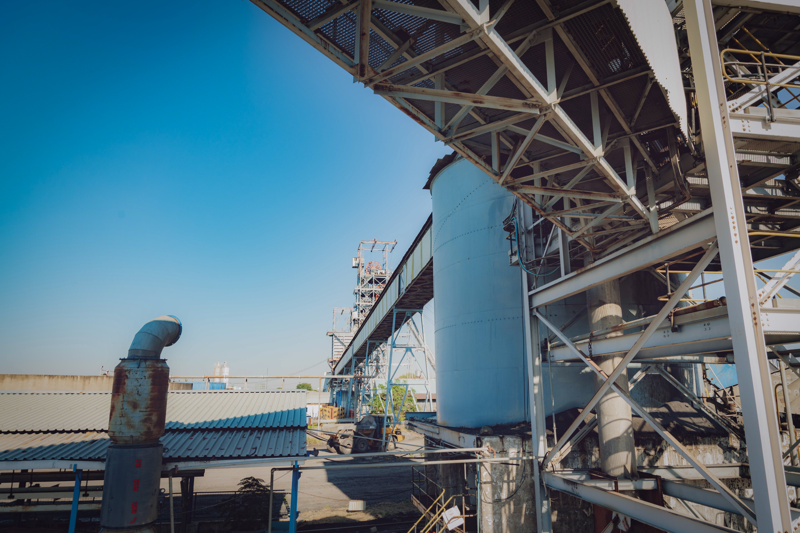
Atomatic owns and operates the chrome recovery plant at Anglo American Platinum’s Amandelbult Mine near Thabazimbi. Siyanda Resources owns a controlling stake in the Atomatic BEE SPV which holds 26% of Atomatic, whilst the remainder is held by Anglo American Platinum.
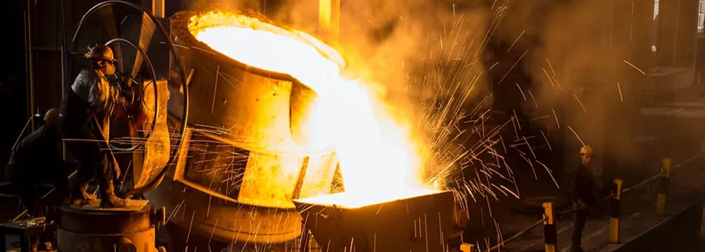
Siyanda Resources owns a majority stake in RST. RST owns a smelting complex in Middelburg and has been involved in the smelting of a wide range of alloys and products throughout the last few decades.
PA is a gas-fired power plant situated in Middelburg with a generation capacity of 10.2MW using four JGS620 Jenbacher engines. Siyanda owns a majority stake in PowerAlt, an acquisition premised on unlocking its renewable energy campaign as a Group.
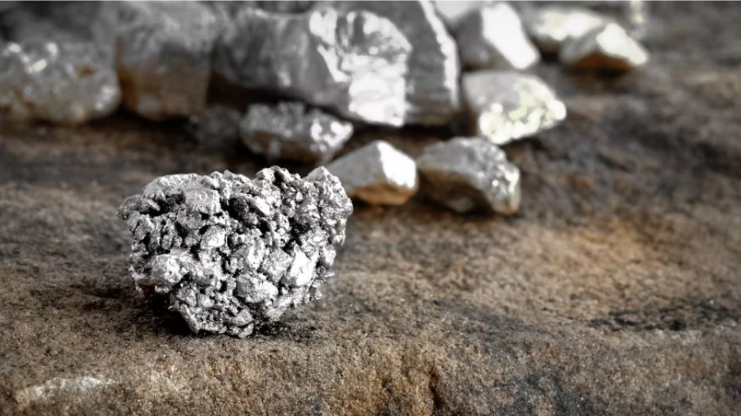
Siyanda Metals Marketing Company (“SMMC”) is a standalone metals marketing business developed by Siyanda and focussed initially on Chrome with a view to expanding into Ferrochrome and PGMs.
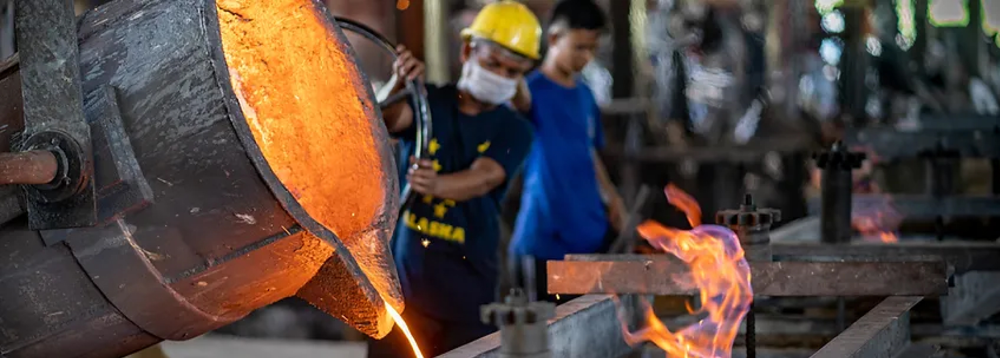
Siyanda established Siyanda Chrome and Smelting Company (“SCSC”) in order to become an integrated producer between Chrome and Ferrochrome.
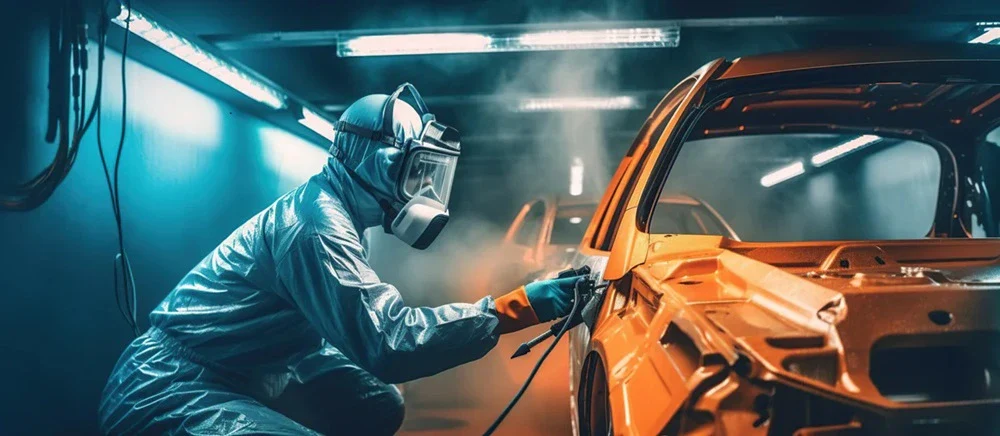
In an effort to reduce its carbon footprint and contribute towards the Green Economy, Siyanda Resources has embarked on a group-wide renewable energy drive through the implementation of various projects.
Home is where our heart is… wherever we are in the world
The company’s partners and subsidiaries are the lifeline of Siyanda Resources.
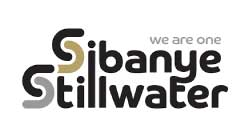
Siyanda partnered with Sibanye Rustenburg Platinum Mine to acquire a stake in their platinum assets located in the Rustenburg Region. Siyanda Resources accordingly owns a minority stake in SRPM’s BEE SPV which holds a 26% stake in SRPM. The acquisition was funded through a vendor financed loan.
Visit Site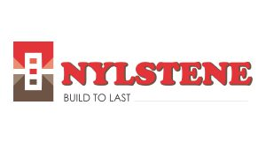
Established in 1988 and situated in Modimolle (formerly known as Nylstroom) in the Waterberg District of the Limpopo Province, Nylstene is a clay brick manufacturer that employs over 250 people and has a distribution network covering the whole of the Waterberg District, Gauteng and parts of the Greater Limpopo and Mpumalanga.
Visit Site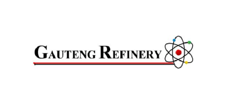
Rooted in values such as Trust, Transparency and Technical Excellence, the Gauteng Refinery’s sole purpose is to deliver on its commitment to “Unlocking Opportunity In The Precious Metals Value Chain”.
Visit SiteThis proudly and fully Black-Women-led mining company is owned by Kgalagadi Alloys (44%), Kalahari Resources (36%) and the Industrial Development Corporation of South Africa Limited (IDC) (20%).
Visit SiteA Siyanda Resources-led consortium successfully subscribed to 5% equity in Impala Platinum and Impala Bafokeng Resources (previously Royal Bafokeng Resources) respectively. This landmark transaction allows Siyanda, alongside Impala’s employees and surrounding communities, to actively participate in the Rustenburg assets of Impala Platinum, as well as the Impala Platinum precious and base metal refineries.
Visit SiteThis remarkable story has not been achieved alone, but in collaboration with selected partners that contribute meaningful value and complement Siyanda’s existing technical and management capabilities.
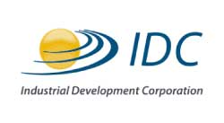
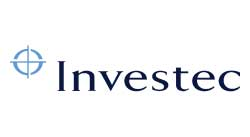
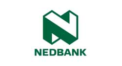
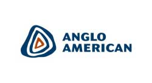
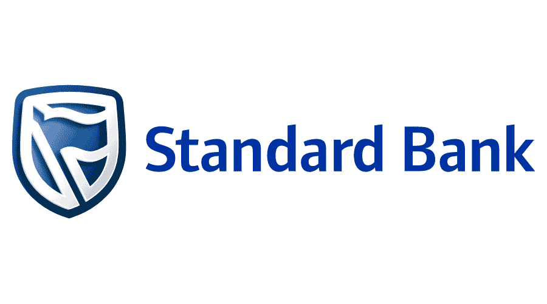